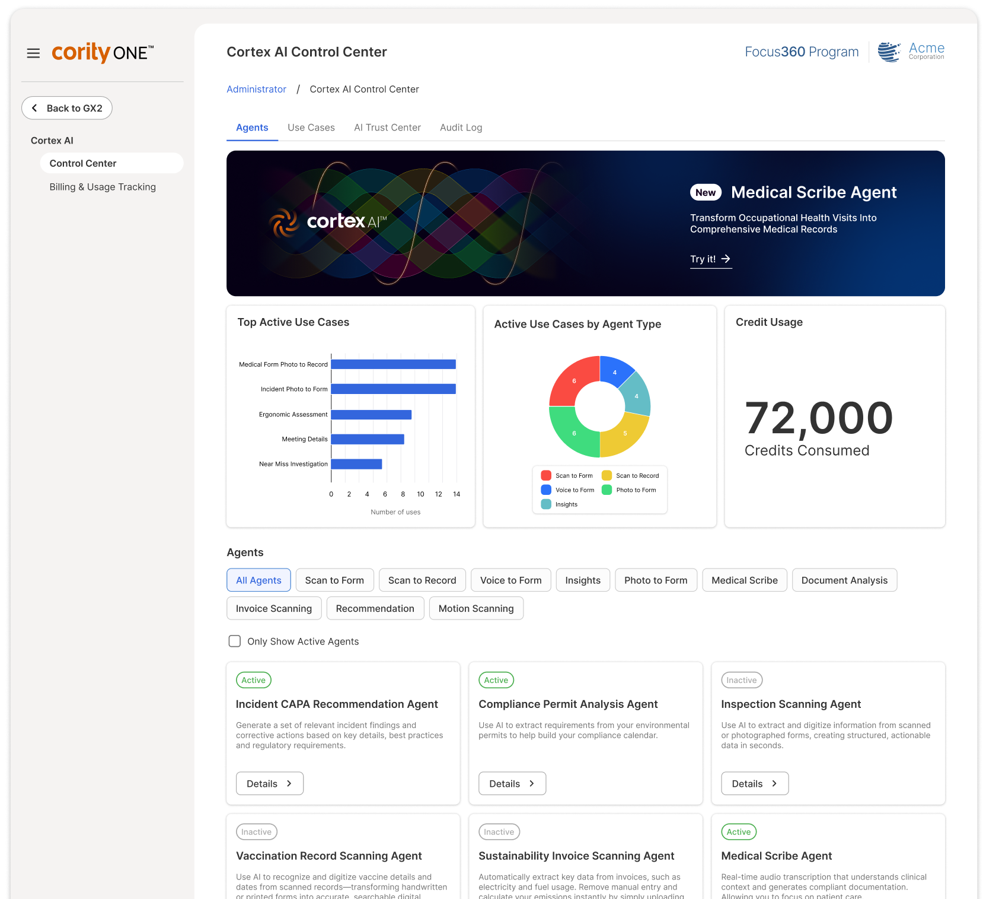

Cortex AI encompasses Cority's AI capabilities that embed a layer of intelligence across the CorityOne platform. Cortex AI enables organizations to embed and use artificial intelligence directly within their workflows, data, and daily routines, all without code.
Cortex AI offers a Control Center that connects multiple AI applications together across CorityOne. From the control center, administrators can configure and manage AI workflows using out-of-the-box AI agents, or configure AI agents for their own use cases, even selecting the most appropriate AI model for each scenario.
Each AI Agent provides different capabilities throughout Cority. From the Control Center, you can view details for each AI agent, see which ones are active in your organization, and filter the grid for specific agents.
When you click on an agent, you are taken to the Agent Details page, where you can do the following:
From the Control Center, you can monitor the following usage of the AI agents you have active:
